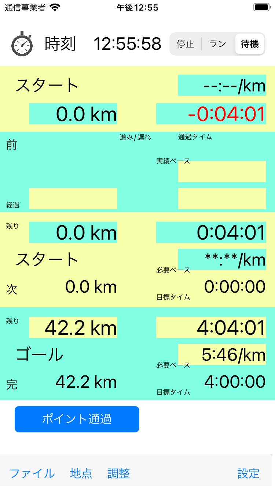

マラソン用タイムキーパーです。
ゴールや次の関門・給水までの距離、制限時間・目標時間までの残り時間、それをクリアするために必要なペースを計算します。
手の甲や二の腕に予定タイムを書いてませんか?
メモだけではなく、現況から逐次アップデートしていきます。
スタートからの走行距離は、GPS/HealthKitの実測と各チェックポイントの通過時の合わせ込みとで求めます。
経過時間は、指定されたスタート時刻からの時間です。マラソンのスタート時刻を指定します。
基本は時計です。マラソン大会を想定しているので時計を止めるという概念はありません。
メインの表示は、スタートからの情報、直前のポイントからの情報、次のポイントまでの情報、ゴールまでの情報があり、
スタートや直前からは、実際の走行距離と経過時間に実績のペース、ゴールや次の点までは、残りの走行距離と設定時間までの残り時間と要求されるペースが表示されます。
直前のデータとしては、さらにポイント通過時間と目標時間との差を表示します。
チェックポイントは、スタートからの距離と制限時間や目標時間を指定します。
時間指定は、途中で修正可能な目標時間と関門等変更のできない制限時間の指定があります。目標はネット及びグロスで指定できます。
目標タイムやペースは適宜修正することができます。
プラス・マイナスのボタンの変更単位は設定ページで指定できます。
情報が多すぎると解りにくくなるので、直前の情報を非表示にすることができます。
各表示項目の説明ラベルを非表示にすることができます。
走行距離はGPS機能で測定するのを標準としますが、HealthKitの距離を使用することもできます。
ただし、HealthKitでは更新が遅く、誤差が大きくなります。
また、これらで実測せずに、定速走行と仮定して進むことも可能です。
移動方法なしとした場合は、ポイント通過ボタンで次の地点に進みます。(前地点からある程度時間が経過している場合)
走行距離測定方法は、設定ページの計測で選ぶことができます。
記録を取ることは目的としていませんが、各地点の実通過時間が記録されます。
今後のために保存しておくことも可能です。
注意:
実戦投入する前に、練習時などで使って慣れてください。データが多く何を見れば良いか最初のうちは悩んでしまうと思います。
マラソン中にはなるべく考え事をしないように、少しなれておいてください。
試行には、計測の定速モードが有用と思います。実際に移動しなくても、移動距離が進んでいきます。デモみたいなものです。
使ってみて:
RC版の試用がウルトラマラソンだったため、電池セーブの目的に前半はHealth Kitモードで後半にGPSモードにしました。
関門ギリギリの予定タイムではなかったので、地点(エイド)通過時に目標との前後を確認するのがメインの使い方になりました。
これがギリギリだと、時間・距離・ペースの確認をしたくなるでしょう。
履歴:
ver.1.01 ダイアログのタイミングの変更
ver.1.02 地点に関する問題の修正
ver.1.23 スタート前処理の修正
Credit
App uses icons designed from "Flaticon", "ICOOON MONO".
操作方法
| |
|
|
|
|
|
 |
メイン画面、スタートからの情報、直前ポイントからの情報、次のポイントまでの情報、ゴールまでの情報 |
設定画面、スタート時間、移動方法、地点リスト・メニュー・修正、調整画面での単位、スタート待ちの場合 |
地点リスト、地点を洗濯して、修正します |
地点情報の一括処理 |
地点情報の入力・修正 |
距離やゴールタイムの調整 |
スタート待ちの画面 |